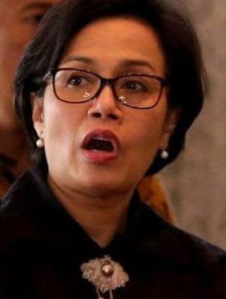

KOMPETENSI KEAHLIAN

Tata Busana
Program studi Tata Busana sering juga disebut dengan nama Fashion Design. Pada Program studi ini di pelajari teknik mendesain, belajar membuat pola, menjahit, dan seluk beluk produksi busana atau fashion.

Tata Boga
Program studi Tata Boga mempelajari teknik penyajian makanan dengan memperhatikan kualitas, rasa, estetika, dan kebutuhan gizi. Akan mempelajari mengolah berbagai hidangan dari daerah dan negara.

Otomasi Industri
Teknik otomasi insustri adalah suatu teknik yang menerapkan sistem pengajaran yang mengarah ke bidang perakitan sistem-sistem di dunia industri yang berbasis otomasis/outomatic.
Teknik Listrik
Teknik Tenaga Listrik adalah bidang ilmu yang mempeljari teknik-teknik yang berhubungan dengan tenaga listrik dan permasalahannya sehingga tenaga listrik dapat disalurkan dengan baik.
Teknik Mesin
Teknik Mesin adalah ilmu teknik mengenai aplikasi dari prinsip fisika untuk analisis, desain, manufuktur, dan pemeliharaan sebuah sistem mekanik.

Rekayasa Perangkat Lunak
Program Rekayasa Perangkat Lunak adalah satu bidang profesi yang mendalami cara-cara pengembangan perangkat lunak termasuk pembuatan, pemeliharaan, menajemen organisasi pengembangan perangkat lunak dan menajemen kualitas.
STRUKTUR ORGANISASI
Struktur organisasi di kelas XRpl2
Hosea
KEPALA SEKOLAH
menjabat kepala sekolah
Yuan
WAKA KURIKULUM
Menjabat wakil kepala sekolah kurikulum
Tata
WAKA KESISWAAN
menjabat wakil kepala sekolah kesiswaan
ANDK
wakil kepala sekolah
menjabat wakil kepala sekolah
Wahyusukidayo
WAKA SARANA
menjabat wakil kepala sekolah sarana prasarana
Official SMK Texmaco
SUBSCRIBEBERITA TERBARU
Menyajikan informasi tentang Smk dan Sma di semarang , Website ini dalam tahap pengembangan

BERITA TERBARU
Siap-siap! SPP SMA dan SMK bakal di naikan,
Semarang.com, Para wali murid jenjang SMA dan SMK harus siap mengeluarkan anggaran lebih besar untuk biaya pendidikan anak-anaknya. Sebab, Dinas Pendidikan (Dindik) Jawa tengah (Jateng)berencana menaikkan besaran SPP mulai tahun ajaran baru pada Juli 2018. Bapak kepala Provinsi Jawa tengah Andika,
READ MORE...BERITA TERBARU
beasiswa smk dan sma Swasta di Jawa tengah (Contoh Postingan )
semarang – Kebijakan SPP gratis bagi yang berprestasi tidak hanya untuk SMA dan SMK Swasta menurut bapak kepala Jawa tengah dan Kepala sekolah Smk dan sma. Hosea menuturkan bahwa kebijakan spp gratis bagi yang berprestasi dan anak yatim-piatu di berikan keringanan biaya Spp
READ MORE...BERITA TERBARU
Pengumuman SBMPTN Bagi siswa (Contoh Postingan)
Menjelang tahun ajaran baru, berbagai kesibukan mulai tampak terjadi. Kesibukan karena mempersiapkan berbagai kebutuhan untuk memasuki sekolah baru, ujian naik kelas, ujian nasional bahkan persiapan tes masuk perguruan tinggi idaman. Hari-hari ini pihak sekolah terutama
READ MORE...KANTOR SMK Semarang
Jl.mangkang,Semarang ,Indonesia
Kontak kami
Jumat , 07.00 WIB - 16.00 WIB SMKN